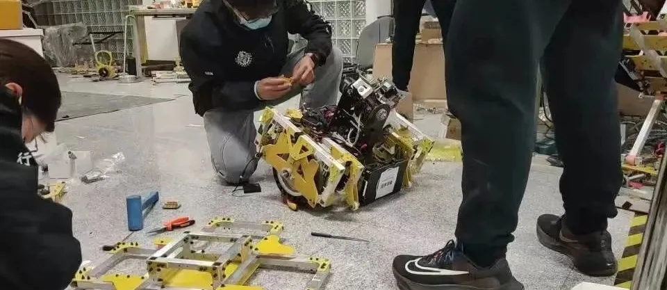

使用小程序

平衡步兵的设计相比于其他兵种极为特殊，它只有两个轮子，这就代表着它的设计中也要考虑平衡性，作为特殊兵种，也有比赛特有的功率与能力，可以跑的更猛更快，有着无与伦比的机动性与进攻性，拥有两个大装甲板可以使它侧面接敌，也是作为战斗中的"JOKER"鬼牌有着极强的能力，在RoboMaster比赛中有着强攻突击手与对手短兵相接，是十分强劲与重要的单位。
“制作方面有特点，制作者更是如此”
潘存意，现攻读研究生，电控组成员，负责平衡步兵全部的电控调试，从第一版调到第二版
徐春鹏，也是攻读研究生，机械组成员，主要负责第二版平衡步兵的设计与制作，底盘与轮组的设计。
权智凡，人送外号凡帝，机械组成员，第一版平衡步兵的设计与制作，也是底盘与轮组为重。
平衡步兵的调试与跳坡测试
对平衡步兵的期望：
希望它能平稳的运行，按照要求在赛场上展示更多的它的长处，能拿到更多的分数吧。
采访小彩蛋：
小编：咱们制作平衡步兵的时候有什么趣事之类的么？
凡帝：开始的时候很难受，因为它这个轮组使用的轮盘不是很好，之前拆了几次需要用大锤一直敲，才能敲下来。
张哥：80，80。
--“各种程度上的深入人心”
-END-
文字|勒寒
排版|勒寒
图片|沈理电协
审核|红鲤 恩嘉